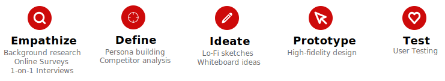
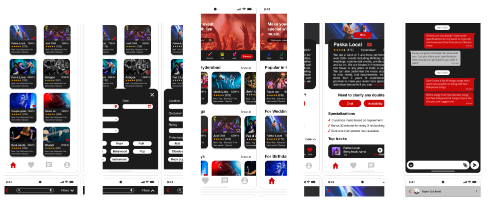

UX Designer - Mobile App
Provides local musicians a platform and makes the booking process easy.

Project Duration
November 2022 - December 2022
My Role
UX Design, User Research, Wireframing, Interaction, Visual Design, Prototyping & Testing, Information Architecture
Tools Used
Figma, Jamboard, Google Sheet, Google Docs,
OVERVIEW
Musician For You is a user-friendly app designed to simplify the process of booking local musicians. The app features a comprehensive list of local musician bands, categorized based on different occasions. Users can preview recent performances of bands to ensure they meet their expectations before making a booking. The app also includes a chat feature, allowing users to directly communicate with bands, clarify doubts, and provide specifications. The website design was the result of thorough research and testing, with a focus on meeting the needs and preferences of users.
The Problem
Finding an affordable musician and building trust can be challenging for people. Additionally, local musicians often struggle to attract customers due to their lack of popularity.
The Solution
The app helps users discover and connect with the ideal local musician who matches their preferences and expectations. It offers filtering options based on user requirements and allows direct communication through a chat feature with the selected musician.
DESIGN PROCESS
USER RESEARCH SUMMARY
Conducted user interviews to know about the users pain points and what they feel would have made their experience easy.
Study type: Moderated usability study
Number of participants: 5
Location: Coffee shop
Duration: 20 min
PAIN POINTS
1.Time Taking
Finding and booking a musician can be challenging and time-consuming when lacking contacts or knowledge of where to begin.
2.Meet expectations
After conducting extensive research and finally contacting a musician, it can be disheartening to discover that they are unavailable on the desired day.
3.Trust
Due to the prevalence of fake accounts on social media, even after making an advance payment, it becomes difficult to trust whether the musician will show up as promised.
4.Budget
It can be extremely challenging to find a musician who fits within our budget, and non-local musicians often require additional transportation charges, further complicating the process.
USER JOURNEY MAP
The user's goal was to book a musician for their daughter's wedding, but they lacked a starting point. Searching for a musician who meets all the requirements can be a time-consuming process. The user desires to efficiently book a talented musician within their budget, minimizing the time spent on the search.
PERSONAS
PAPER WIREFRAMES
The main goal of the app was to make it easy for the users to book a local musician as easily as possible, with no confusion.
The wireframes were designed by sketching some quick alternatives to each screen and the best options were marked and are put together in a single screen and formed a wireframe.
LOW-FIDELITY PROTOTYPE
In order to address most of the users pain points we have added filters in the app which helps the users to select according to their requirements.
- Every musician has price and rating displaying on the top.
- Filters will help users in saving their time while they choose a musician.
- Users can check the musicians recent performances.
- Users can directly chat with the musician band and clarify their doubts and specify about their requirements.
USABILITY STUDY FINDINGS
We conducted two rounds of unmoderated usability with 5 participants. Findings from the first study helped guide the designs from wireframes to mockups and the second study used the high fidelity prototypes and revealed what aspects of the mockups needed refining.
Interaction design
Hiring a musician band
Simple form fields to complete to make the hiring process fast and seamless.
The app can have a feature to save or re-use previously used details. Without the feature it would be very bothersome to repeatedly enter the same details when creating similar events.
Filter musician to save time
Filters help users to refine the bands and choose easily.
User research helped to add additional filters to make the overall exeprience of the user easy.The app can also have an option to save the filters.
The App Flow
The final design of the app has a easy hiring process, button to view available dates, chat integration to help user chat with the band directly and clarify doubts, specify requirements.
The app also has a quiz option to match with a musican band without browsing all the list of musicians.

HIGH-FIDELITY PROTOTYPE
You can view the flow of the high-fidelity prototype here.
ACCESSIBILITY CONSIDERATIONS
1. The colors used in the app supports the web accessible guidelines.
2. We have an option to control the automated content in the app using the side buttons.
3. Alternative navigation options are provided and all the pages are consistent with respect to design which avoids confusion.

Interested in working together? I’d love to hear from you.


© 2022 All Rights Reserved to Indrajasiripuram